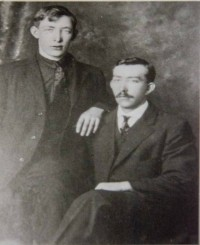
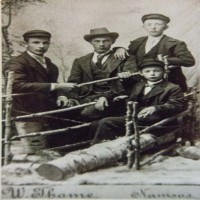
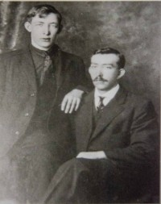

Karen Dorthea Hansdatter
K, #40776, f. 7 mars 1831, d. 25 mars 1922
Foreldre
Biografi
Karen Dorthea Hansdatter ble født den 7 mars 1831 på/i Nærøy, Nord-Trøndelag. Hun giftet seg med
Johan Dangvart Larsen den 13 mai 1861. Hun giftet seg med
Kristian Mathiassen den 11 mai 1874. Hun døde den 25 mars 1922 på/i Nærøy, Nord-Trøndelag.
| Sist redigert |
16 november 2009 00:00:00 |
Hans Hansen Lund
M, #40777, f. 1799, d. 24 juni 1880
Foreldre
Biografi
Hans Hansen Lund ble født i 1799 på/i Båtstøa 17/14, Lund; Kolvereid, Nærøy, Nord-Trøndelag. Han giftet seg med
Martha Jonsdatter Hagan den 3 januar 1827. Han døde den 24 juni 1880 på/i Nærøy, Nord-Trøndelag.
Hans Hansen Lund ble døpt den 12 januar 1800 på/i Nærøy, Nord-Trøndelag.
| Sist redigert |
11 november 2007 00:00:00 |
Martha Jonsdatter Hagan
K, #40778, f. 1801, d. 17 januar 1887
Foreldre
Biografi
Martha Jonsdatter Hagan ble født i 1801 på/i Nærøy, Nord-Trøndelag. Hun giftet seg med
Hans Hansen Lund den 3 januar 1827. Hun døde den 17 januar 1887 på/i Nærøy, Nord-Trøndelag.
| Sist redigert |
11 november 2007 00:00:00 |
Erik Michelsen Brandvig
M, #40781, f. 3 juni 1812
Foreldre
Biografi
Erik Michelsen Brandvig ble født den 3 juni 1812 på/i Harøya, Stjørna, Bjugn, Sør-Trøndelag. Han giftet seg med
Randig Olsdatter den 15 mai 1843 på/i Ørland, Sør-Trøndelag.
Erik Michelsen Brandvig was also known as Erik Harøy. Han ble døpt den 28 juni 1812 på/i Ørland kirke, Brekstad, Ørland, Sør-Trøndelag. Han bodde på/i Havøe, Ørland, Sør-Trøndelag.
| Sist redigert |
4 februar 2022 00:00:00 |
| Slektskap | Tippoldefar til Lovise Julie Eggan |
Randig Olsdatter
K, #40782, f. omtrent 1806
Foreldre
Biografi
Randig Olsdatter ble født omtrent 1806 på/i Ringebu, Oppland. Hun giftet seg med
Erik Michelsen Brandvig den 15 mai 1843 på/i Ørland, Sør-Trøndelag.
Randig Olsdatter was also known as Rønnau Olsdatter.
| Sist redigert |
19 november 2008 00:00:00 |
| Slektskap | Tippoldemor til Lovise Julie Eggan |
Ole Olsen
M, #40783, f. før 1786
Biografi
Ole Olsen ble født før 1786.
| Sist redigert |
19 november 2008 00:00:00 |
| Slektskap | 2. tippoldefar til Lovise Julie Eggan |
Michael Eriksen Harøy
M, #40784, f. 1770
Biografi
Michael Eriksen Harøy ble født i 1770 på/i Harøya, Stjørna, Bjugn, Sør-Trøndelag. Han giftet seg med
Ellen Andersdatter Harøy den 2 august 1805 på/i Ørland kirke, Brekstad, Ørland, Sør-Trøndelag.
| Sist redigert |
4 februar 2022 00:00:00 |
| Slektskap | 2. tippoldefar til Lovise Julie Eggan |
Melkior Eriksen
M, #40785, f. 15 juli 1842, d. 10 mars 1928
Foreldre
Biografi
He ble født on 15 July 1842 Ørland, Sør-Trøndelag. Melkior Eriksen døde den 10 mars 1928 på/i Namsos, Nord-Trøndelag. Han ble gravlagt den 20 mars 1928 på/i Vemundvik kirkegård, Namsos, Nord-Trøndelag.
Melkior Eriksen was also known as Melkior Lien. Han ble døpt den 14 august 1842 på/i Ørland, Sør-Trøndelag. Han bodde i 1900 på/i Røbergvik 6/6, Lødding, Vemundvik, Nord-Trøndelag.
| Sist redigert |
8 januar 2023 00:13:10 |
| Slektskap | Bror av oldefar/mor til Lovise Julie Eggan |
Rønnau Johnsdatter Indstrand
K, #40786, f. 1801
Biografi
Rønnau Johnsdatter Indstrand ble født i 1801 på/i Rennebu, Sør-Trøndelag.
| Sist redigert |
4 februar 2022 00:00:00 |
Nils Edvard Lien
M, #40787, f. 3 februar 1863, d. 20 september 1956
Foreldre
Biografi
Nils Edvard Lien ble født den 3 februar 1863 på/i Ørland, Sør-Trøndelag. Han giftet seg med
Oline Olsdatter den 11 oktober 1887 på/i Bjugn kirke, Bjugn, Sør-Trøndelag. Han døde den 20 september 1956 på/i Namsos, Nord-Trøndelag. Han ble gravlagt den 27 september 1956 på/i Vemundvik kirkegård, Namsos, Nord-Trøndelag.
Nils Edvard Lien ble konfirmert i 1878 på/i Ørland, Sør-Trøndelag. Han bodde på/i Botnan, Vemundvik, Namsos, Nord-Trøndelag. Han og
Oline Olsdatter eide Røbergvik 6/6, Lødding, Vemundvik, Nord-Trøndelag. Det fortelles at han kunne stanse blødning.
| Sist redigert |
4 februar 2022 00:00:00 |
| Slektskap | Søskenbarn 2 ganger forskjøvet til Lovise Julie Eggan |
Oline Olsdatter
K, #40788, f. 28 mars 1861, d. 10 mars 1945
Foreldre
Biografi
Oline Olsdatter ble født den 28 mars 1861 på/i Rissa, Sør-Trøndelag. Hun giftet seg med
Nils Edvard Lien den 11 oktober 1887 på/i Bjugn kirke, Bjugn, Sør-Trøndelag. Hun døde den 10 mars 1945 på/i Namsos, Nord-Trøndelag. Hun ble gravlagt den 19 mars 1945 på/i Vemundvik kirkegård, Namsos, Nord-Trøndelag.
Oline Olsdatter was also known as Oline Lien. Hun og
Nils Edvard Lien eide {-place}.
| Sist redigert |
4 februar 2022 00:00:00 |
Ole Eliassen
M, #40789, f. før 1841
Biografi
Ole Eliassen ble født før 1841.
| Sist redigert |
24 april 2006 00:00:00 |
Kristian Odin Lien
M, #40790, f. 15 juni 1886, d. 16 mai 1962
Foreldre

Bernhard og Kristian Lien
Biografi
Kristian Odin Lien ble født utenfor ekteskap den 15 juni 1886 Bjugn, Sør-Trøndelag. Han giftet seg med
Leitha Eutura Williams. Han døde den 16 mai 1962. Han ble gravlagt på/i Amsterdam Township Cemetery, Kanawha, Hancock, Iowa, USA.
Kristian Odin Lien was also known as Christian Lien. Han ble døpt den 18 juli 1886 på/i Bjugn, Sør-Trøndelag. Han bodde i 1900 på/i Røbergvik 6/6, Lødding, Vemundvik, Nord-Trøndelag. Han emigrerte fra Trondheim til Portland, Oregon, USA, den 2 august 1911.
| Sist redigert |
28 juli 2024 10:23:33 |
| Slektskap | 3-menning 1 gang forskjøvet til Lovise Julie Eggan |
Martin Nikolai Lien
M, #40791, f. 14 februar 1888, d. 23 desember 1966
Foreldre
Familie: Helga Solum (f. 27 mars 1888, d. 25 mai 1967)
| Sønn | Helge Normann Lien (f. 21 september 1910, d. 22 mai 1990) |
| Sønn | Arvid Johannes Lien (f. 23 juni 1912, d. 24 april 1973) |
| Sønn | Arne Kristoffer Lien (f. 26 november 1913, d. 3 oktober 1975) |
| Datter | Ruth Lien (f. 5 mai 1915, d. 30 april 1918) |
| Datter | Svanhild Lien (f. 12 desember 1917, d. 24 desember 1990) |
| Sønn | Einar Ragnvald Lien+ (f. 19 august 1919, d. 24 mars 1994) |
| Sønn | Kåre Ingvald Lien (f. 12 august 1921, d. 10 juli 1977) |
| Sønn | Nils O. Lien+ (f. 19 november 1922, d. 29 mai 1973) |
| Datter | Olga Johanne Lien (f. 19 november 1922, d. september 2009) |
| Datter | Ragnhild Lien (f. 5 januar 1925, d. 27 mars 2006) |
| Sønn | Harald Lien+ (f. 5 januar 1925, d. 3 juli 1990) |

Adolf Bergum, Kristian Hestvik
Biografi
Martin Nikolai Lien ble født den 14 februar 1888 på/i Bjugn, Sør-Trøndelag. Han giftet seg med
Helga Solum. Han døde den 23 desember 1966. Han ble gravlagt den 30 desember 1966 på/i Mosjøen kirkegård, Vefsn, Nordland.
Martin Nikolai Lien ble døpt den 29 mars 1888 på/i Bjugn, Sør-Trøndelag. Han bodde i 1900 på/i Røbergvik 6/6, Lødding, Vemundvik, Nord-Trøndelag. Han bodde i 1920 på/i Kjelseth 6/1 og 2, Klinga, Nord-Trøndelag.
| Sist redigert |
27 juli 2024 23:58:50 |
| Slektskap | 3-menning 1 gang forskjøvet til Lovise Julie Eggan |
Nils Lien
M, #40792, f. 1 april 1890
Foreldre
Biografi
Nils Lien ble født den 1 april 1890 på/i Bjugn, Sør-Trøndelag.
Nils Lien ble døpt den 4 mai 1890 på/i Bjugn, Sør-Trøndelag. Han bodde i 1900 på/i Røbergvik 6/6, Lødding, Vemundvik, Nord-Trøndelag. Han bodde i 1910 på/i hjemme hos foreldrene. Han bodde i 1920 på/i Røbergvik 6/6, Lødding, Vemundvik, Nord-Trøndelag. Han emigrerte til Riverton, Wyoming, USA, i 1921.
| Sist redigert |
4 april 2023 00:29:40 |
| Slektskap | 3-menning 1 gang forskjøvet til Lovise Julie Eggan |
Bernhard Lien
M, #40793, f. 24 mars 1892
Foreldre

Bernhard og Kristian Lien
Biografi
Bernhard Lien ble født den 24 mars 1892 på/i Bjugn, Sør-Trøndelag.
Bernhard Lien ble døpt den 13 mai 1892 på/i Bjugn kirke, Bjugn, Sør-Trøndelag. Han bodde i 1900 på/i Røbergvik 6/6, Lødding, Vemundvik, Nord-Trøndelag. Bernhard reiste fra Trondheim 30.4.1913 med "Oslo" tilhørende Allan Line. I mai 1913 ankom han Quebeck, Canada med "Hesparian" med Portland, Oregon; USA som reisemål. Han bodde i 1920 på/i Røbergvik 6/6, Lødding, Vemundvik, Nord-Trøndelag. Han emigrerte til USA.
| Sist redigert |
28 juli 2024 10:26:24 |
| Slektskap | 3-menning 1 gang forskjøvet til Lovise Julie Eggan |
Ellen Margrethe Lien
K, #40794, f. 18 mars 1896, d. 20 november 1946
Foreldre
Biografi
Ellen Margrethe Lien ble født den 18 mars 1896 på/i Bjugn, Sør-Trøndelag. Hun giftet seg med
Johan Martin Holm. Hun døde den 20 november 1946 på/i Namsos, Nord-Trøndelag. Hun ble gravlagt den 26 november 1946 på/i Namsos kirkegård, Namsos, Nord-Trøndelag.
Ellen Margrethe Lien was also known as Ellen Margrethe Holm. Hun ble døpt den 17 mai 1896 på/i Bjugn, Sør-Trøndelag. Hun bodde i 1900 på/i Røbergvik 6/6, Lødding, Vemundvik, Nord-Trøndelag.
| Sist redigert |
18 juli 2022 15:21:54 |
| Slektskap | 3-menning 1 gang forskjøvet til Lovise Julie Eggan |
Einar Marceus Lien
M, #40795, f. 31 mai 1898, d. 14 oktober 1919
Foreldre
Biografi
Einar Marceus Lien ble født den 31 mai 1898 på/i Bjugn, Sør-Trøndelag. Han døde den 14 oktober 1919 på/i Vemundvik, Nord-Trøndelag.
Einar Marceus Lien ble døpt den 24 juli 1898 på/i Bjugn, Sør-Trøndelag. Han bodde i 1900 på/i Røbergvik 6/6, Lødding, Vemundvik, Nord-Trøndelag. Han bodde i 1910 på/i Hals 12/1, Hals, Vemundvik, Nord-Trøndelag. Einar var på høstparten i 1919 på den folketomme plassen Kvernmoen i Vetterhusbotnet for å kløyve ved. Den 14. oktober tok han seg en fridag for å jakte fugl i området Brikstaven-Liakammen.
Ved Vetterhusvatnet hadde han laget bål og tatt kaffepause. Einars hagle var av typen med "hale", noe som gjorde at den ikke kunne sikres på linje med senere modeller, men alene som han var, lente han hagla mot en solid furulegg uten å knekke den og ta ut haglpatronen. Etter kaffepausen hadde tatt på seg ryggsekken og gått bort for å hente hagla. Trolig sto den slik til at en kvist kom borti avtrekkeren. Dette medførte at skuddet gikk av og traff Einar omtrent midt på kroppen.
Einar ble funnet død like ved det nedbrenet bålet. Hunden "Barra" satt trofast ved hans side.
| Sist redigert |
18 november 2024 18:26:21 |
| Slektskap | 3-menning 1 gang forskjøvet til Lovise Julie Eggan |
Ole Lien
M, #40796, f. 11 april 1900, d. 22 januar 1980
Foreldre
Biografi
Ole Lien ble født den 11 april 1900 på/i Røbergvik 6/6, Lødding, Vemundvik, Nord-Trøndelag. Han døde den 22 januar 1980 på/i Namsos, Nord-Trøndelag. Han ble gravlagt den 29 januar 1980 på/i Høknes gravlund, Namsos, Nord-Trøndelag.
Ole Lien bodde i 1920 på/i Røbergvik 6/6, Lødding, Vemundvik, Nord-Trøndelag.
| Sist redigert |
9 mai 2021 00:00:00 |
| Slektskap | 3-menning 1 gang forskjøvet til Lovise Julie Eggan |
{kind=link}
{kind=link}
{kind=link}
{kind=link}